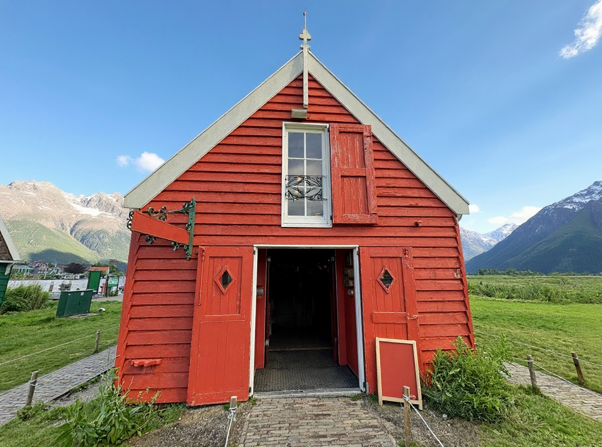
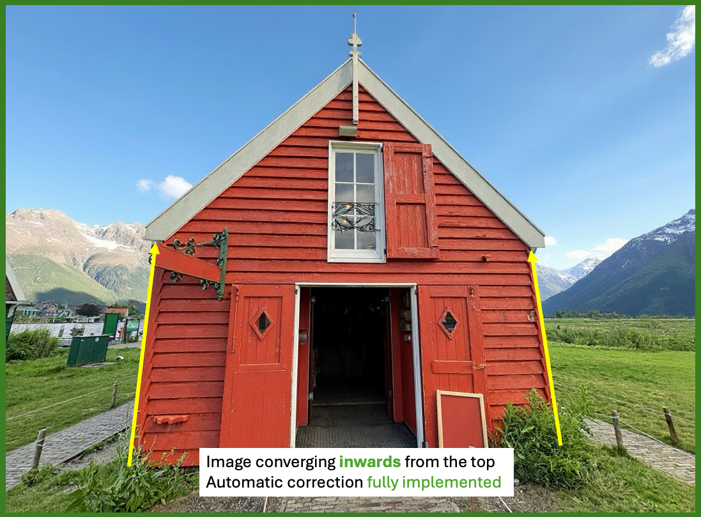
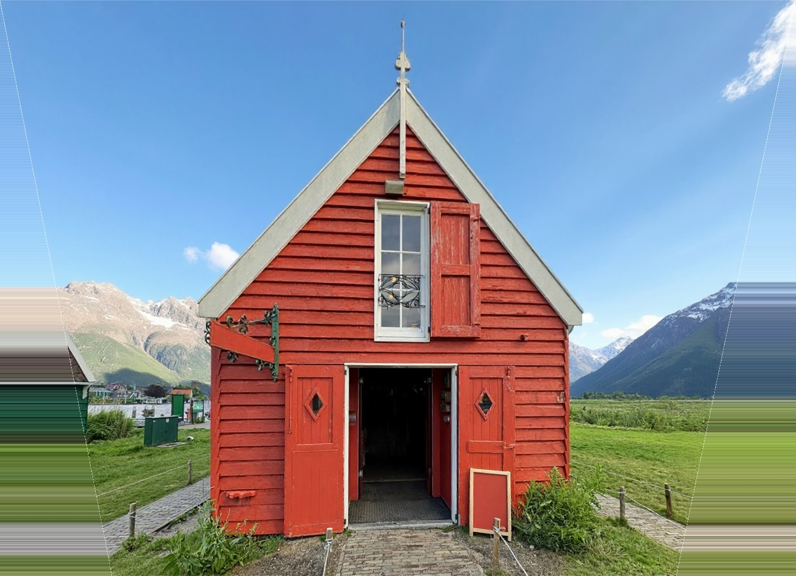
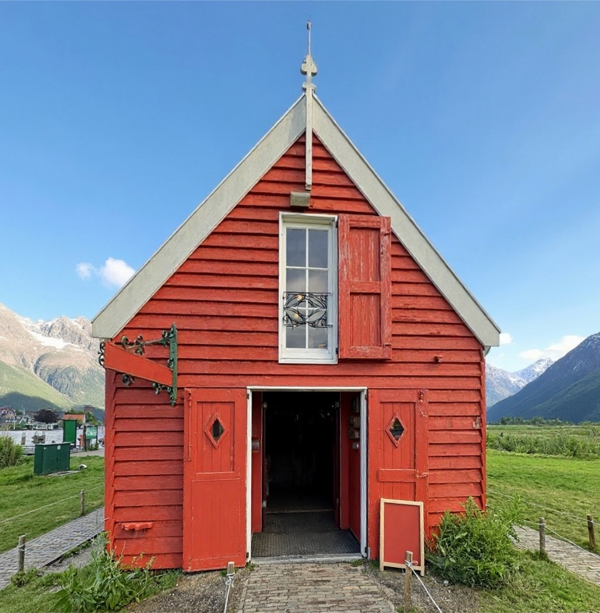
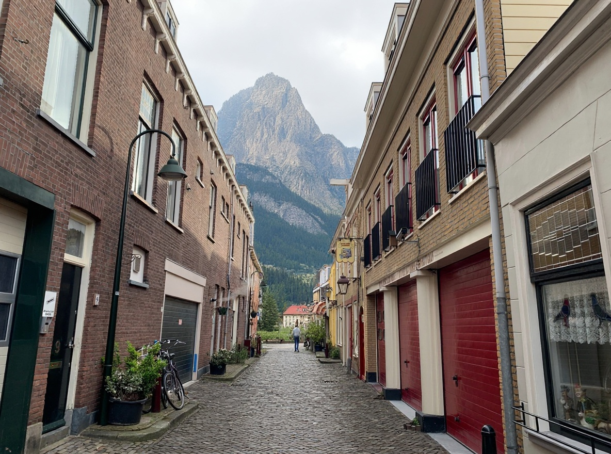
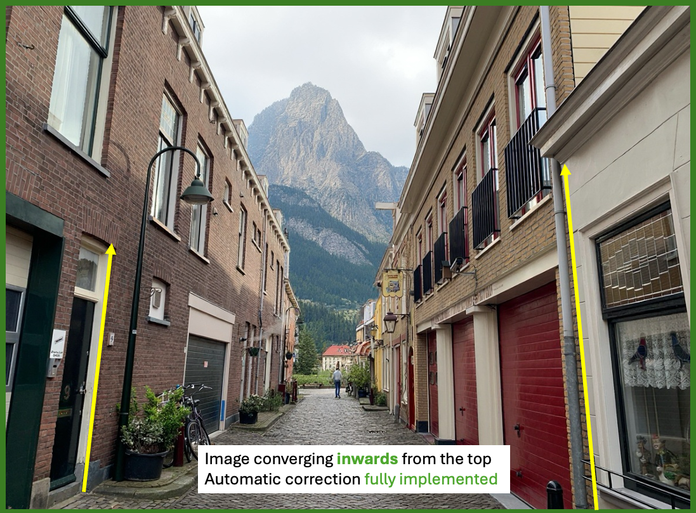
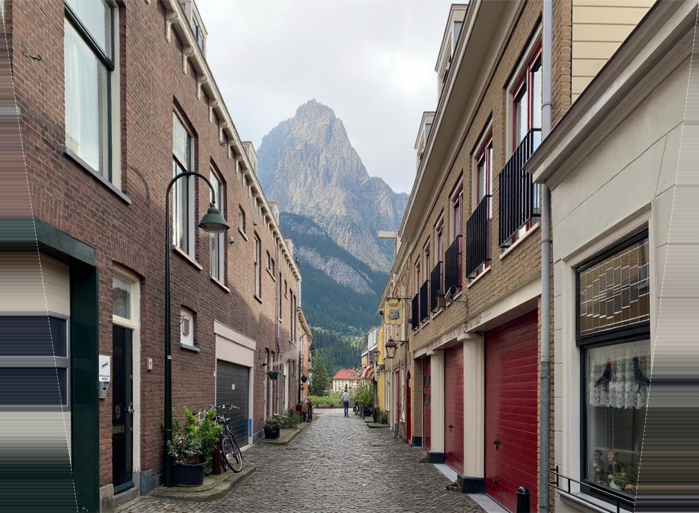
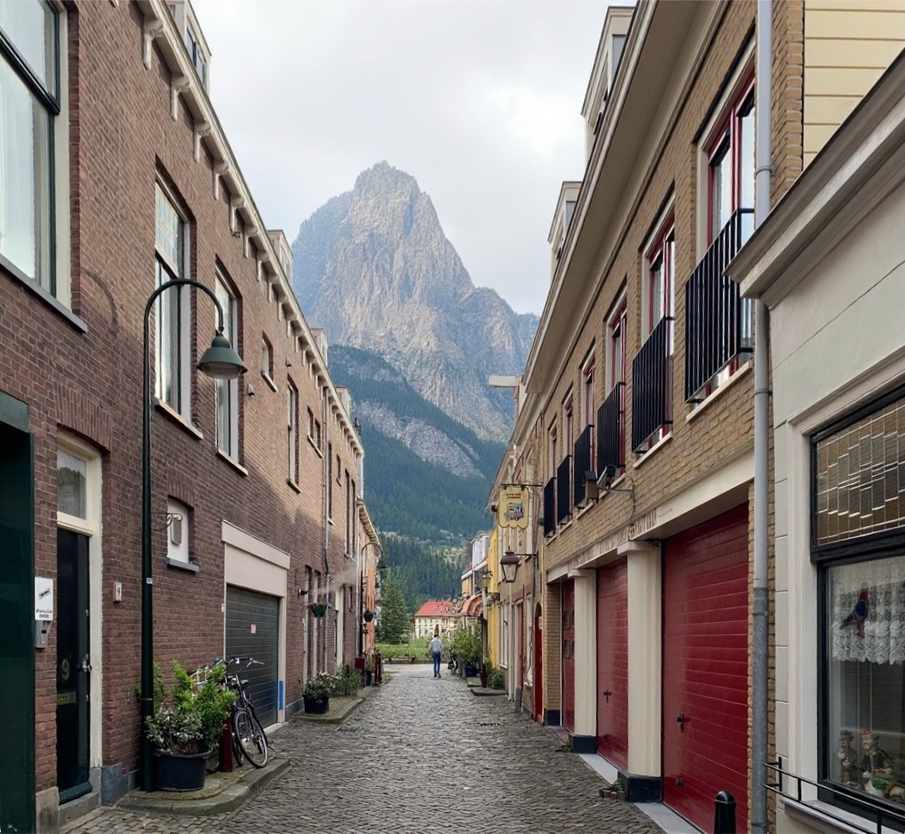
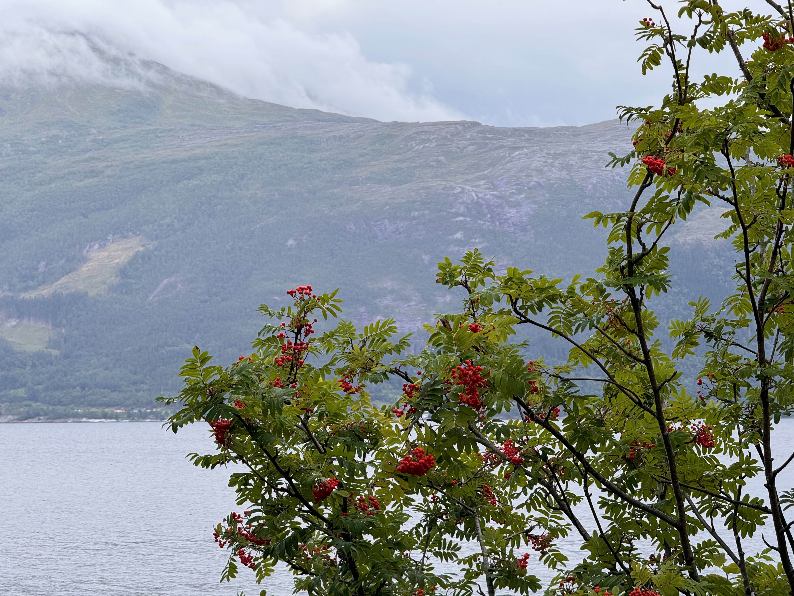
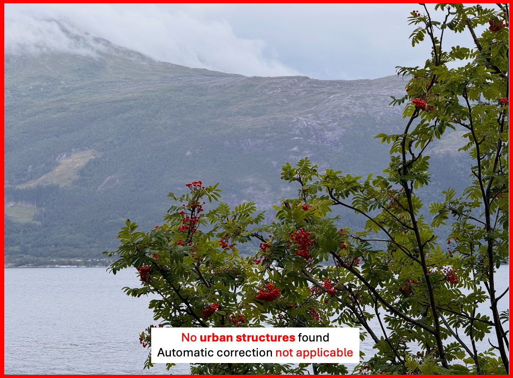

Introducing: Auto Align
Experience effortless photo perfection with Auto Align—the intelligent solution for transforming your urban photography. Instantly correct leaning buildings and wide-angle distortions with a single tap, ensuring your cityscapes and architectural shots always look sharp and professional.
Available for iOS, iPadOS & Mac
Now in TestFlight—be among the first to try it!
What Auto Align Can Do
- • Automatically detects and corrects leaning buildings in photos
- • Fixes wide-angle distortions common in urban photography
- • Simple, one-tap interface for fast results
- • Preserves image quality and details
What Auto Align Cannot Do
- • Does not add missing parts of buildings cropped out of the frame
- • Cannot fix extreme perspective distortions beyond a certain limit
- • Does not apply artistic filters or color corrections
Intended Use-cases (Possible automatic correction)
Auto Align is designed to deliver optimal results for urban photography, especially images featuring buildings, cityscapes, and architectural structures. When your photo contains clear, straight lines and well-defined urban elements, the app can automatically detect distortions caused by wide-angle lenses or camera tilt and correct them with a single tap. This ensures your images look professional, with verticals and horizontals properly aligned—ideal for real estate, travel, and creative city photography.








Wide Angle Correction
When capturing tall buildings or structures from ground level using a wide-angle lens, the camera records a broader scene due to the increased diagonal distance between the lens and the subject. This extra information is compressed into the frame, often causing buildings to appear tilted or leaning. Auto Align intelligently corrects this distortion and, where necessary, fills in missing edge pixels by smoothly extending the edge colors, resulting in a natural-looking image.
Cropped Correction
Cropped correction gives you the choice to keep only the undistorted, known pixels in a rectangular image, or to retain all corrected pixels—including areas where missing information is filled. This lets you decide between a clean crop or a full correction, based on your preference.
Non-Intended Use-cases (No automatic correction)
Auto Align works best with city photos that have clear buildings and straight lines. If your picture is stretched outwards from the top or doesn’t show obvious urban features, the app may not be able to fix it automatically. These types of images are not supported in the current version.


Privacy Policy
For our privacy policy for the app Auto Align and Terms of Use, please click the button below:
View Privacy Policy and Terms of Use